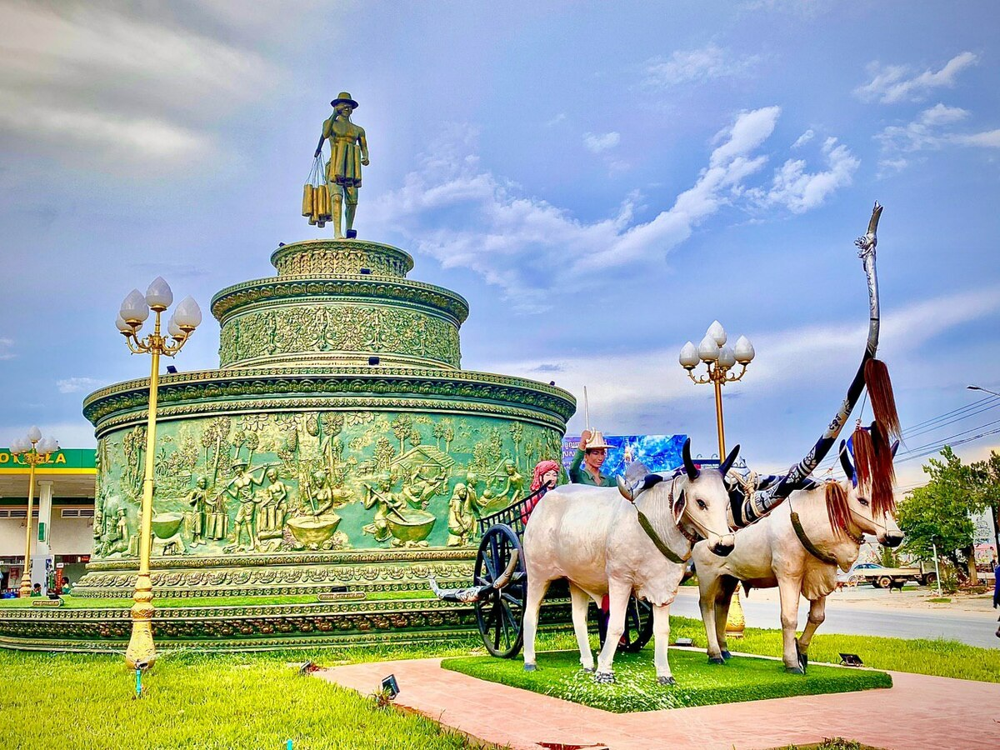

ការពិពណ៏នាអំពី ខេត្តនីមួយៗនៅក្នងប្រទេសកម្ពុជា
ទំព័រដើម
តាកែវ
ភ្នំពេញ
កែប
ព្រះសីហនុ
ស្វាយរៀង
កំពង់ធំ
បាត់ដំបង
ពោធ៏សាត់
សៀមរាប
រតនគីរី
មណ្ឌលគីរី
ក្រចេះ
ត្បូងឃ្មុំ
កំពង់ចាម
ព្រៃវែង
កណ្តាល
ឧត្តរមានជ័យ
កំពង់ឆ្នាំង
កំពង់ស្ពឺ
បន្ទាយមានជ័យ
កោះកុង
ប៉ៃលិន
កំពត
ស្ទឹងត្រែង
ព្រះវិហារ
ទំនាក់ទំនង
ខេត្តកំពង់ស្ពឺ

ព័ត៌មានសង្ខេបអំពីខេត្តកំពង់ស្ពឺ
> កំពង់ស្ពឺ (អ.ស.អ.: [kɑmpɔːŋ spɨː] ជាអក្សរឡាតាំង Kampong Speu) ជាខេត្តនៃកម្ពុជា។ ខេត្តមានព្រំប្រទល់ជាប់ខេត្តពោធិ៍សាត់ និង កំពង់ឆ្នាំងនៅខាងជើង ខេត្តកណ្ដាលនៅខាងកើត តាកែវនៅខាងភាគអាគ្នេយ៍ កំពតខាងត្បូង និងកោះកុងនៅភាគខាងលិច។ ទីរួមខេត្តគឺក្រុងច្បារមន។
> ខេត្តកំពង់សឺ្ពសិ្ថតនៅក្នុងតំបន់ខ្ពង់រាប និង ព្រៃភ្នំមានប្រជាជនសរុប ៥៩៨ ៨៨២ នាក់ ក្នុងនោះមានប្រុស ២៨៧ ៣៩២ នាក់ ស្រី ៣១១ ៤៩០ នាក់។ ជាភាគរយនៃប្រជាជនជា ស្ត្រីមាន ៥២ ភាគរយ។ ខេត្តនេះរួមមាន ៧ ស្រុក, ក្រុង ២,៨៩ ឃុំ-សង្កាត់ និង ១៣១៩ ភូមិ។ ចំនួន ប្រជារា្រស្តទូទាំងខេត្តនេះ សើ្មនឹង ៥,២ ភាគរយនៃប្រជាជនទូទាំងប្រទេសកម្ពុជា។ សន្ទភាពប្រជាជនរបស់ខេត្តគឺ ៨៥ នាក់ក្នុងមួយគីឡូម៉ែត្រការ៉េ ខ្ពស់ជាង សន្ទភាពកម្រិតជាតិ ដែលមានតែ ៦៤ នាក់ [២]។
> ខេត្តកំពង់ស្ពឺត្រូវបានគេស្គាល់ថាជាខេត្តដែលសំបូរដោយដើមត្នោតច្រើនជាងគេ។
> ខេត្ត កំពង់ស្ពឺ មានចំនួន ៧ ស្រុក និង ២ ក្រុង :
- ស្រុកបរសេដ្ឋ
- ស្រុកគងពិសី
- ស្រុកឱរ៉ាល់
- ស្រុកសំរោងទង
- ស្រុកភ្នំស្រួច
- ស្រុកថ្ពង
- ស្រុកសាមគ្គីមុនីជ័យ
- ក្រុងច្បារមន
- ក្រុងឧដុង្គម៉ែជ័យ